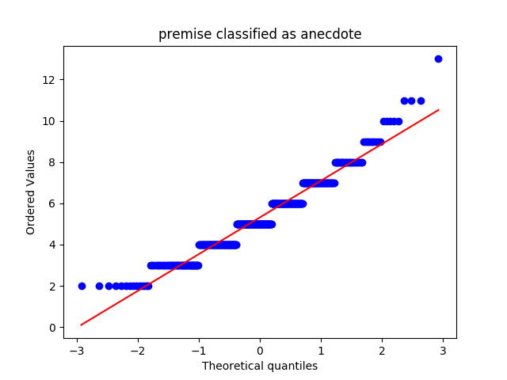
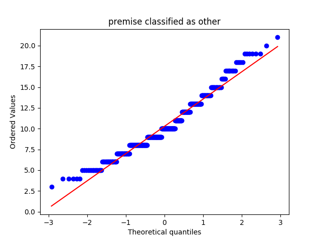
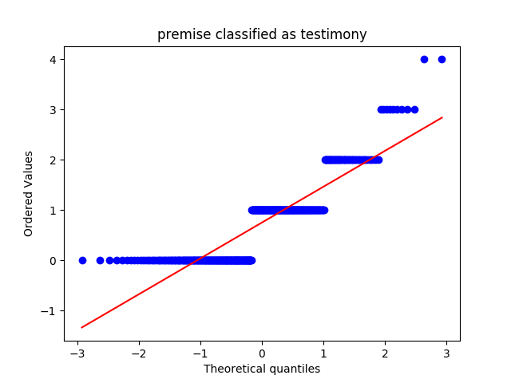
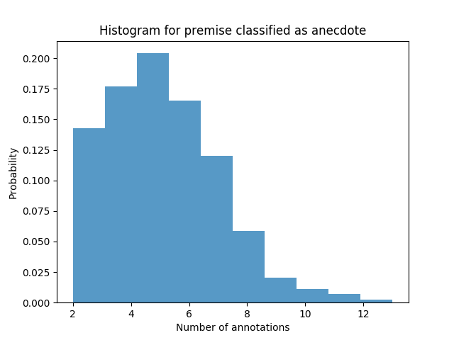
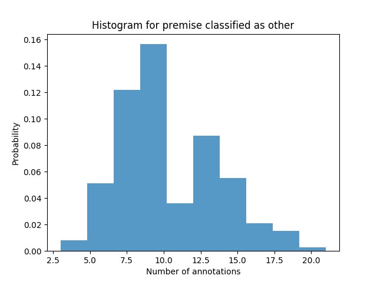
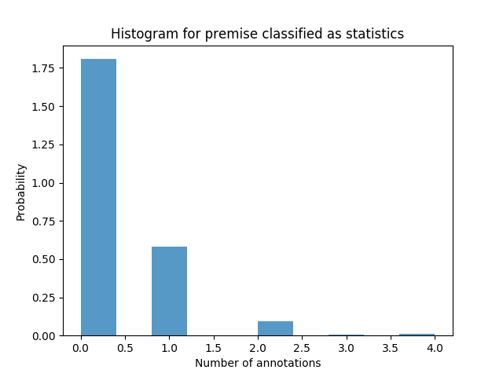
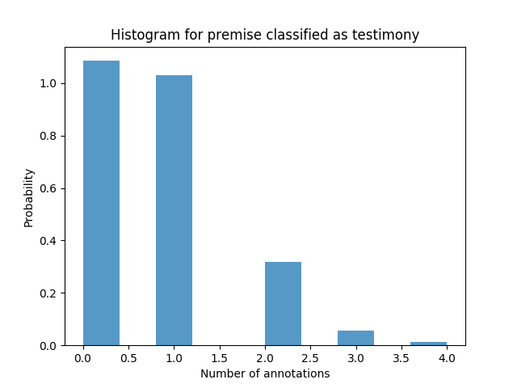
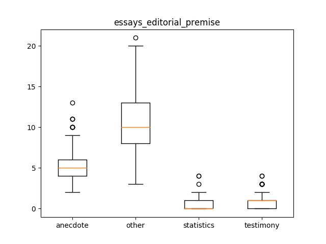

essays_editorial_premise
Describing the Data-Set
Mean, Median and Standard Deviation
|
anecdote |
other |
statistics |
testimony |
| median |
5.000000 |
10.000000 |
0.000000 |
1.000000 |
| mean |
5.314214 |
10.289277 |
0.334165 |
0.753117 |
| std |
1.814605 |
3.323176 |
0.610020 |
0.796749 |
QQ Plots




Histograms




Box Plot(s)

Normalization Test
stat: 0.951983392239, p-val:3.90010995721e-10
Not Normally distributed for premise classified as anecdote
stat: 0.964686334133, p-val:3.01846867501e-08
Not Normally distributed for premise classified as other
stat: 0.580391287804, p-val:6.01190354502e-30
Not Normally distributed for premise classified as statistics
stat: 0.792040348053, p-val:2.78569530071e-22
Not Normally distributed for premise classified as testimony
Significancy Test
Using friedmann-test
Using friedmann-test
using stats.friedmanchisquare
chisq: 1111.93464567
p-value: 9.37193606069e-241
statistic: 2884.11614834
p-value: 1.11022302463e-16
chi2:1056.4765586
ranking[1.3453865336658355, 3.9226932668329177, 1.6596009975062345, 3.0723192019950125]
Post Hoc Analysis (holm_multitest):
------------------------------------------------------
Comparing: anecdote vs statistics
z_value: 18.9412317932
p_value: 0.0
adj_p_value: 0.0
--------------------------------------------------------------------------
Comparing: anecdote vs other
z_value: 9.32701811046
p_value: 0.0
adj_p_value: 0.0
--------------------------------------------------------------------------
Comparing: anecdote vs testimony
z_value: 15.4948849254
p_value: 0.0
adj_p_value: 0.0
--------------------------------------------------------------------------
Comparing: statistics vs other
z_value: 28.2682499037
p_value: 0.0
adj_p_value: 0.0
--------------------------------------------------------------------------
Comparing: other vs testimony
z_value: 24.8219030359
p_value: 0.0
adj_p_value: 0.0
--------------------------------------------------------------------------
Comparing: statistics vs testimony
z_value: 3.4463468678
p_value: 0.000568220499813
adj_p_value: 0.000568220499813
--------------------------------------------------------------------------